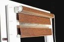
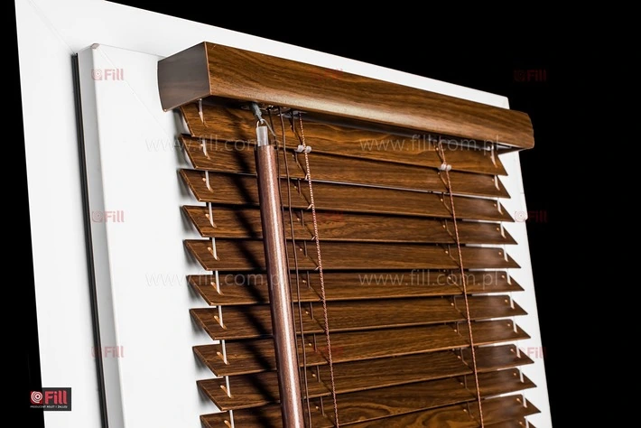

Rolety wewnętrzne
Przejdź do oferty ↗
Rolety zewnętrzne
Przejdź do oferty ↗
Żaluzje i plisy
Przejdź do oferty ↗
Moskitiery
Przejdź do oferty ↗Pełny opis kategorii
Pośród dostępnych współcześnie sposobów na chronienie wnętrz budynków przed zbyt dużym nasłonecznieniem czy też na zapewnienie prywatności osobom w nich przebywającym, szczególnym powodzeniem cieszą się rolety. Te niezwykle praktyczne, a zarazem estetyczne artykuły mogą być stosowane zarówno w mieszkaniach prywatnych, biurach, jak i w innych obiektach.
- Rolety wewnętrzne
- Rolety zewnętrzne
W naszej ofercie, Klienci z Tarnowa oraz okolic znajdą szeroki wybór rolet zewnętrznych oraz wewnętrznych. Dostępne modele to m.in. Dzień i Noc, Besta czy wolnowisząca. W celu uzyskania szczegółowych informacji, zapraszamy do kontaktu z naszym salonami sprzedaży w mieście Tarnów bądź z głównym odziałem firmy w Radłowie.